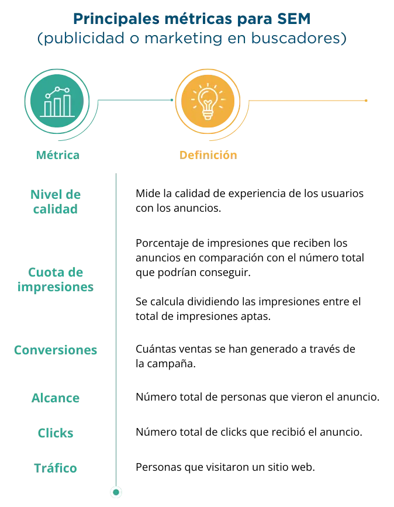

build Introducción
El marketing digital se refiere al conjunto de estrategias, técnicas y acciones que se realizan a través de canales digitales como Internet, redes sociales, correo electrónico, publicidad en línea, entre otros, con el objetivo de promover una marca, producto o servicio y generar resultados favorables y tangibles para una empresa o negocio.
El marketing digital está encaminado a atraer, convertir y fidelizar a los clientes. Incluye una variedad de tácticas y canales, así como la optimización de motores de búsqueda (SEO), marketing de contenido y publicidad en línea.
Se caracteriza por la interactividad que permite la comunicación bidireccional con el público; se puede segmentar para dirigir las acciones al público específico, es escalable al adaptarse a las necesidades y presupuesto de cualquier empresa y es medible, porque los resultados de las acciones se pueden medir y analizar con precisión.
El mundo digital está en constantes cambios, por lo que es esencial que las empresas comprendan y dominen las herramientas y medios que constituyen el marketing digital.
En el presente eje temático se analizarán diferentes técnicas y enfoques que conforman el marketing digital, desde la optimización de motores de búsqueda (SEO) hasta el uso efectivo del email marketing, así como algunas estrategias para lograr los objetivos de marketing. Se mostrará cómo utilizar estas herramientas para llegar a la audiencia correcta y generar interés que pueda ser convertido en ingresos para el negocio.
Además, se presentará el detalle de cómo hacer un análisis y medir los resultados para entender cómo evaluar el rendimiento de las campañas y ajustar las estrategias en función de los datos obtenidos.
troubleshoot ¿Qué es el marketing digital?
1 Definición del marketing digital
El marketing digital se refiere al conjunto de estrategias, técnicas y acciones que se realizan a través de canales digitales como Internet, redes sociales, correo electrónico, publicidad en línea, entre otros, con el objetivo de promover una marca, producto o servicio y generar resultados favorables y tangibles para una empresa o negocio.
2 Antecedentes contextuales
La mercadotecnia se ha transformado en las últimas décadas gracias al surgimiento de Internet. La forma tradicional de comunicar a través de medios tradicionales, como la televisión o el periódico, ha disminuido drásticamente conformándose un ciberespacio.
Gracias a esto, han surgido formas más dinámicas de acercarse a los consumidores, de estar presentes en sus días y vida cotidiana. Estamos hablando del marketing digital o mercadotecnia en línea.
A continuación, se presentan algunas definiciones de marketing digital en la visión de varios autores y especialistas.
- Philip Kotler, economista, considerado fundador de la mercadotecnia señala que
El marketing digital surge en la actual era de la información basada en las tecnologías de la información. Los consumidores están bien documentados y pueden comparar diversas ofertas de productos similares. Para ello la marca tiene que segmentar el mercado y desarrollar un producto que satisfaga las necesidades de los públicos objetivos. - Neil Patel, especialista en marketing digital señala que es el conjunto de técnicas, estrategias y acciones que se realizan en el entorno digital para conseguir objetivos de marketing. Estas técnicas incluyen la optimización de motores de búsqueda, la publicidad en línea y la gestión de la reputación en línea.
- Seth Godin, empresario y autor, sostiene que el marketing digital es la creación de historias y el uso de estas historias para construir relaciones y generar confianza con los consumidores.
En secciones anteriores se ha hablado de la comunicación y, tal como veremos en este eje temático, la comunicación y el marketing digital utilizan algunas herramientas en común, por lo que es importante hacer algunas distinciones entre ambas.
En el caso del marketing digital, además de la difusión de los productos y servicios de una empresa, tiene otras funciones adicionales como definir estrategias de distribución, de precio y de producto. De esta forma, sus principales indicadores son las ventas y la satisfacción del cliente.
Por otro lado, la comunicación se centra en la conexión y reputación de la marca con los grupos internos y externos, y su principal indicador es la reputación de la empresa o de la marca.
Como conclusión podemos decir que ambos son diferentes, pero se complementan para alcanzar los objetivos de la empresa.
3 Estrategias y herramientas de marketing digital
3.1. Sitios web
En el mundo digital, los sitios web juegan un papel fundamental en una estrategia de marketing digital, ya que cumplen con el propósito de ser el centro de comunicación y la plataforma de distribución de productos o servicios de una empresa.
Hoy en día, si buscamos una empresa en Internet lo primero que encontramos es un sitio web. Si no lo encontráramos es como si el negocio no existiera.
Un sitio web es una herramienta esencial para la comunicación con los clientes. Actúa como una vitrina digital que muestra los productos o servicios que una empresa ofrece, así como también contenidos relevantes y, en algunas ocasiones, hasta el equipo de trabajo. Esto con la finalidad de brindar confianza. Asimismo, detalla información sobre sus precios, ubicación, horarios, formas de contacto y de pago.
Además, un sitio web funciona como un canal de distribución clave para la empresa. Puede implementarse un carrito de compras y opciones de pago seguras para que los visitantes puedan realizar la compra de productos o servicios.
Un sitio web diseñado y optimizado para dispositivos móviles también mejora la experiencia del usuario, pudiendo integrarse con otras herramientas del marketing digital, como redes sociales, email marketing o CRM (Customer Relationship Management), reforzando, de esta forma, la estrategia de marketing.
Para implementar y profundizar la información de los sitios web, recomendamos dirigirse al eje de canales digitales de comunicación.
3.2. Buscadores (SEO y SEM)
En la sección de canales digitales de comunicación se analizan las estrategias SEO y SEM.
La estrategia SEO se basa en el posicionamiento orgánico en buscadores. Dentro de sus vertientes, podemos diferenciar:
SEO on page, que se dedica a optimizar diferentes aspectos del sitio web, desde contenido hasta descripciones de imágenes, entre otros.
SEO off page, que busca la relevancia del sitio a través de enlaces entrantes desde otros sitios web.
Para aplicar esta estrategia y profundizar en la misma se sugiere dirigirse a la sección de canales digitales de comunicación.
Por otra parte, la estrategia SEM (Search Engine Marketing) siglas que en español aluden al marketing en buscadores o publicidad en buscadores, consiste en colocar anuncios de pago en buscadores, como Google o Yahoo u otros. El propósito de estos anuncios pagados es aparecer en los primeros resultados de búsquedas.
Para la implementación de una estrategia SEM, hay que seguir las siguientes etapas:
Etapa 1. Definir arquetipos de clientes.
Los arquetipos de clientes están diseñados para representar segmentos típicos de clientes dentro de un mercado. Se basan en descripciones generales basadas en categorías amplias.
Estas descripciones pueden incluir características psicográficas y demográficas generales centradas en patrones de comportamiento comunes y motivacionales.
Identificar los arquetipos de clientes permite entender las necesidades y comportamientos de grupos más grandes de clientes y pueden ser aplicados a una variedad de contextos de marketing y de desarrollo de productos.
Tener una clara identificación del arquetipo que estamos intentando alcanzar con la estrategia SEM, ayudará a entender qué tipo de palabras claves o frases se utilizarán en una búsqueda, las cuales podrán utilizarse para la campaña.
Para la realización de un arquetipo de clientes se sugiere seguir los elementos de la sección de arquetipos de clientes (ubicada en el eje temático del mismo nombre, en esta dimensión temática).
Etapa 2. Investigación de palabras claves
Uno de los primeros pasos es analizar las palabras claves que están posicionando el sitio web de la empresa y, por otro lado, hacer un listado de palabras que el arquetipo busca. Esto se puede realizar a través de la herramienta SEMRush o con el planificador de palabras claves de Google.
Estas herramientas permitirán hacer un listado de las palabras claves más relevantes, la cantidad de visitas que podrían generar y el costo por clic, es decir, lo que se pagaría por cada una de ellas.
Se sugiere seleccionar aquellas palabras claves que generen mayor cantidad de visitas. Si el presupuesto de la campaña es menor a 100 dólares se recomienda seleccionar entre cinco y seis palabras para hacer eficiente el presupuesto.
Etapa 3. Definición de objetivo de campaña
Se deben definir los objetivos que se deseen alcanzar. Uno de los principales es llevar tráfico al sitio web, pero es importante que sea medible. Por ejemplo: conseguir que 50 000 personas visiten el sitio web.
Etapa 4. Creación de una campaña
Existen diferentes buscadores para realizar una campaña, como Google, Yahoo! o Bing. Se sugiere seleccionar el más adecuado con base en el arquetipo generado en la etapa 1.
El buscador más popular para realizar campañas es Google. A continuación, se describen los pasos para crear una según su página de soporte:
Ingresar a la cuenta de Google Ads.
En el menú izquierdo, hacer clic en campañas y seleccionar una Campaña nueva.
Seleccionar un objetivo para la campaña.
Seleccionar un tipo de campaña como búsqueda.
Escribir mensajes de publicidad.
Insertar palabras claves y presupuesto
Etapa 5. Análisis de resultados
Una vez que la campaña empiece a obtener resultados, éstos podrán ser medidos con base en los objetivos que se plantearon. Dentro del buscador donde se realizó la campaña, se brindan métricas sobre el desempeño de ésta. También se pueden utilizar herramientas como Google Analytics. A continuación, se presenta un cuadro que integra las principales métricas.
Si la campaña no está presentando los resultados deseados como en el ejemplo del Cuadro 2, se pueden cambiar las palabras clave o aumentar el presupuesto.
3.3. Email marketing
El email marketing es una herramienta que permite a las empresas comunicarse directamente con las personas de su base de datos de manera personalizada y efectiva.
A través del correo electrónico, las empresas pueden enviar mensajes relevantes y oportunos a sus clientes, así como prospectos, manteniéndolos informados sobre promociones especiales, contenidos o avisar de nuevos productos, entre otros.
El email masivo consiste en enviar mensajes o contenidos que forman parte de campañas de marketing o publicidad y se dirigen a una lista grande de contactos, tiene el propósito de conseguir un objetivo previamente definido, como puede ser el lanzamiento de un producto o servicio, conseguir ventas, comunicar información relevante o lograr mantener el reconocimiento de marca.
Una de las principales ventajas del email marketing es su capacidad para segmentar y personalizar los mensajes. En los momentos oportunos, con el envío de la información adecuada sobre los intereses y preferencias de las personas, aumentará la probabilidad de que los correos sean abiertos, leídos y que se lleven a cabo acciones deseadas por parte de la empresa, como realizar una compra.
Para implementar el email marketing es importante conocer el cómo se debe realizar y las herramientas disponibles. Se sugiere revisar la sección de canales digitales de comunicación. Esta sección proporcionará una guía completa para implementar una estrategia de email marketing.
Para instrumentar campañas de email marketing existen diversidad de servicios gratuitos o de paga, entre ellos:
Mailchimp, muy reconocida plataforma para el envío de correos masivos. Permite la automatización de correo electrónico, segmentación de datos, ofrece plantillas para facilitar el diseño; personalización, formularios de captura e integración con un CRM.
Doppler, es una plataforma dedicada al envío de correos masivos. Tiene plantillas fáciles de editar y diseños que se pueden adaptar a las necesidades específicas de cada negocio.
Ofrece diferentes planes de pago de acuerdo con las necesidades de cada empresa, cuenta con prueba gratuita.
3.4. Gestión de redes sociales
En la era digital actual, las redes sociales se han convertido en plataformas imprescindibles para conectar con la audiencia y construir relaciones sólidas con los clientes. Estas plataformas ofrecen un espacio interactivo y dinámico donde las empresas pueden compartir contenido relevante, promocionar sus productos o servicios, además de llevar tráfico hacia sus sitios webs y escuchar las necesidades y comentarios de las audiencias.
La importancia de la gestión de redes sociales radica en su capacidad para aumentar la visibilidad de la marca y mejorar la reputación en línea. Una presencia activa y estratégica en redes sociales permite que la empresa sea descubierta por nuevos clientes potenciales.
Además del contenido, se puede implementar una tienda en línea dentro de las redes sociales que tienen este beneficio, como se expuso en la sección de social commerce en los canales de distribución. Dicha tienda puede generar ventas, alcance y relevancia en el mercado.
Para implementar una estrategia en redes sociales dentro de una estrategia de marketing digital, se sugiere dirigirse al eje temático de canales digitales de comunicación de esta misma dimensión de comunicación y canales de venta, donde se detallan las diferentes redes sociales y el desarrollo de contenido para éstas. Ahora bien, si desea implementar una tienda en Meta antes Facebook, Instagram, Pinterest o Tiktok, consulte el eje de canales de ventas.
3.5. Marketing de contenidos
Ruiz (2022) define el marketing de contenidos es “una rama del marketing digital basada en la creación y difusión de diferentes tipos de información valiosa con el objetivo de atraer y crear relaciones con el público afín a la marca”.
Si bien los contenidos buscan vender, en ocasiones hay algunos que no hablan de sus productos o servicios de forma directa, sino de forma indirecta. Este tipo de contenido ayuda a encaminar al usuario hacia lo que produce la empresa.
Un ejemplo de lo anterior sería una tienda de ropa que, a través de sus contenidos, enseña a los usuarios a combinar las prendas y a diferenciar el tipo de cuerpo. De esta manera, se utilizan los productos para promover un contenido indirecto de la marca.
Una vez explicado el concepto, es momento de determinar las etapas necesarias para aplicarlas a un negocio (Petrova, 2023):
Etapa 1. Definición de arquetipos de clientes
Como se ha mencionado en diferentes ocasiones, tener claro a qué tipo de arquetipo va dirigido el contenido es fundamental para toda estrategia de marketing y comunicación. En éste se podrán definir datos demográficos, intereses y conductas para desarrollar contenido adaptado a sus necesidades.
Para desarrollar un arquetipo para la empresa e iniciar con el desarrollo del marketing de contenidos, dirigirse a la sección de arquetipos de esta dimensión temática.
Etapa 2: Establecer objetivos
La definición de objetivos para el marketing de contenidos es un paso crucial para medir el impacto, ayudan a establecer la dirección hacia la que se debe dirigir el marketing como aumento de tráfico, generación de leads, mejora de la lealtad de la marca, etc.
Los objetivos deben ser claros y medibles, alcanzables y retadores, encaminados a proporcionar una dirección precisa hacia el logro de los objetivos del negocio.
No se debe olvidar que la elaboración de los objetivos debe estar alineada con los objetivos que la empresa busca a nivel comercial. Según Petrova (2023), los objetivos principales creados por las empresas para el marketing de contenidos son:
- Aumentar el reconocimiento de la marca.
- Atraer más tráfico al sitio web.
- Generación de prospectos.
- Generación de ventas.
- Aumentar la interacción.
- Construir una base de suscriptores.
- Promocionar nuevos productos o aumentar el reconocimiento de éstos.
Cabe destacar que las métricas deben ir en función del medio de distribución que se utilice para ese contenido, es decir, en dónde se estará mostrando. No serán las mismas si se trata de un blog, un email marketing o las redes sociales digitales.
Por ejemplo, si el canal de distribución son las redes sociales, quizá le interese a la empresa la tasa de interacción.
No se debe olvidar establecer indicadores clave de rendimiento, de esa manera se podrán medir los objetivos y verificar si se alcanzaron.
Etapa 3. Auditar el contenido actual
Esta etapa es para aquellas empresas que ya se han esforzado en generar contenido. Si la empresa no ha tenido ninguna acción en cuanto a contenido se refiere, se debe pasar a la siguiente etapa.
La auditoría de contenidos es el proceso de organizar, analizar y mejorar los contenidos existentes. Esta comprensión hará que sea más sencillo entender qué tipo de contenidos funciona mejor para la empresa y su arquetipo de cliente.
Las preguntas claves para analizar los contenidos son:
¿Qué tipo de resultados se han conseguido después de publicar los contenidos?
¿Qué temas de contenido y palabras clave funcionan mejor?
¿Qué formatos de contenido generan más interacción y conversiones?
¿Qué canales generan más tráfico al sitio web?
Tener esta información a la mano será fundamental para definir las acciones a seguir durante la siguiente etapa.
Etapa 4. Creación del calendario editorial
Como se analizó en el apartado de redes sociales, el calendario editorial es un documento en donde se colocan los contenidos que la marca publicará en un determinado momento y en un espacio específico. Esto ayudará a mantener organizada a la empresa.
En el caso del marketing de contenidos, éste se basa en pilares de contenidos, es decir, en temas que son relevantes para la audiencia y que la marca describe desde su experiencia. Por ejemplo, los pilares de marca de un dentista podrían ser el cuidado bucal, los hábitos de cuidado o los productos para el cuidado, entre otros. Lo importante de los pilares es que vayan en función de lo que la marca pueda hablar de ellos para que ésta se coloque como un referente en ese tema.
Para realizarlo se sugiere hacer una lluvia de ideas de los temas que son de interés para el arquetipo. De esta lluvia de ideas, se seleccionan de tres a cinco temas.
Cuando se tengan los pilares se sugiere utilizar la herramienta de Answer The Publicpermite encontrar ideas de contenidos con base en los que el arquetipo de clientes podría estar buscando.Así no se terminarán las ideas para crear contenido.
Answer The Public facilita la investigación de ideas de contenido de acuerdo con lo que las personas buscan. Es una herramienta gratuita y de paga especializada en el análisis de lo que la gente busca y permite generar ideas de contenido. De acuerdo con el tipo de negocio que se tenga, la herramienta online ofrece un listado de preguntas relacionadas con la palabra clave especificada, con base en los resultados, se pueden tomar decisiones sobre qué presentar al arquetipo de cliente para que le sea útil y que ello beneficie a la marca.
Una vez que se tengan los temas de un contenido, se debe pensar cuál será la mejor manera para comunicarlos. Núñez (2020)comparte una matriz de contenidos que se compone de cuatro cuadrantes (Figura): fidelización, atracción, conversión y persuasión. Cada contenido se deberá colocar en uno de los cuadrantes con base en lo que se espera que logre. Una vez se ubique el cuadrante se puede seleccionar uno de los tipos de contenidos que se encuentra en él.
Siguiendo con el ejemplo del dentista, si el tema es: “3 consejos para cuidar la salud bucal de los niños”, y se busca persuadir a la audiencia, se podría hacer una publicación en redes sociales, crear una entrada en un blog o hacer un video tutorial.
Una vez que definida la temática central del marketing de contenidos, es momento de colocarlos dentro del calendario editorial.
Etapa 5. Creación de contenidos
La creación de contenido es la base del marketing de contenidos. Su éxito radica en la calidad, relevancia y creatividad del material producido. Una vez que se ha definido el tema y el tipo de contenido que se realizará, es momento de llevarlo a cabo.
Es necesario tener un profundo conocimiento del tema elegido. Para esto se recomienda hacer una investigación que permita brindar información precisa y actualizada, lo que aumentará la credibilidad del contenido.
Definida la información que se compartirá, se selecciona el formato adecuado para compartir la información y que éste capte la atención de la audiencia.
En cuanto a las herramientas para el diseño y el video, existen diversas opciones disponibles para crear contenido visualmente atractivo y profesional. Para el diseño gráfico, herramientas como Canva permiten crear imágenes, infografías y banners llamativos y personalizados. Esta herramienta cuenta con plantillas prediseñadas y una amplia variedad de recursos visuales para facilitar el proceso de diseño.
Para la creación de videos, programas como Adobe Premiere Pro y iMovie ofrecen una amplia gama de funciones para editar y producir videos de alta calidad. También existen herramientas en línea como Powtoon y Moovly que permiten crear animaciones y presentaciones de manera sencilla y efectiva, sin necesidad de conocimientos avanzados de edición de video.
Con el contenido adecuado y visualmente atractivo, las empresas pueden conectarse con su audiencia, proporcionar valor y fortalecer su presencia en línea de manera significativa.
El conocimiento del arquetipo de cliente determinará en qué canales se debe tener presencia para la distribución de los contenidos.
Siempre es buena idea explorar nuevos canales, solo hay que asegurarse de invertir tiempo y esfuerzos por estar en aquéllos en los que el arquetipo definido por la empresa o negocio se encuentre. De esta manera, se tendrán mayores posibilidades de ser vistos por ellos y cumplir con éxito los objetivos.
Etapa 7. Analizar el rendimiento de los contenidos
Analizar el rendimiento de los contenidos es la forma ideal para comprender qué contenidos están funcionando y cuáles no. También puede ayudar a analizar si los esfuerzos de marketing de contenidos están resultando con base en los objetivos definidos en las etapas previas.
Como se mencionaba en la etapa de objetivos, las métricas dependen del tipo de medio seleccionado para distribuir los contenidos. Petrova (2021) sugiere algunas métricas que se pueden estar analizando a través del marketing de contenidos, las cuales se describen en el cuadro precedente. Para hacer el análisis de estas métricas en la tercera columna se colocan plataformas para extraer la información.
Continuando con el ejemplo del dentista, su estrategia de contenido se basaría en la realización de un blog, y la parte de la distribución en Meta-Facebook e Instagram. Su objetivo es llevar tráfico al sitio web.
Para hacer el análisis del rendimiento de los contenidos se basaría en visitas al sitio web, fuentes de tráfico para medir cuántas llegaron de las redes sociales, tiempo de permanencia para entender si está leyendo los contenidos y páginas visitadas y, para conocer si hay interés en los servicios y si existen formas de contacto.
Este análisis del rendimiento corresponderá al tipo de contenido que realice la marca y los tipos de medios que utiliza para distribuirlos.
4 Implementación de estrategia de marketing digital
4.1. Análisis de mercado
Un análisis de mercado se basa en comprender en qué situación se encuentra la empresa respecto a los productos o servicios que ofrece.
Se tiene que iniciar por entender el sector en el que opera la pyme, incluyendo tendencias del mercado, tamaño y crecimiento esperado.
Habría que analizar a la competencia, identificar a los competidores directos e indirectos, medirse para saber qué ofrecen, cómo lo ofrecen, incluso es pertinente revisar sus estrategias de marketing, identificar sus puntos fuertes y débiles y la cuota de mercado que les corresponde.
Además, es indispensable comprender a la audiencia, al público objetivo, para ello es importante definir los arquetipos de clientes para tener claridad de ese público al que se quiere atender, tanto a los clientes actuales como a los potenciales. Conocer su comportamiento, dónde viven, qué les gusta, qué les interesa y qué problemas tienen que la pyme pueda ayudar a resolver.
Es muy importante estar al tanto de las regulaciones y factores legales aplicables a la industria o sector en el que se desempeña la pyme. Conocer las leyes y regulaciones que afectan a la industria y al marketing digital, es indispensable para ofrecer un mejor servicio al cliente y protegerlo para que su compra sea segura.
4.2. Análisis de la situación de la empresa
La empresa deberá hacer un análisis tanto interno como externo. Hay diversas herramientas para realizarlo, pero se sugiere iniciar por el análisis FODA. Este análisis permite identificar las fortalezas, oportunidades, debilidades y amenazas de un proyecto o negocio (Reaburn, 2021). Ayuda a la empresa a hacer una planificación estratégica y mantenerse a la vanguardia de las tendencias del mercado. Ver la Matriz FODA como muestra.
Las fortalezas se refieren a las iniciativas, procesos, actividades y elementos que funcionan bien dentro de la empresa, y les permite tener una posición competitiva. Por ejemplo, contar con presupuesto para invertir en medios de pagos para llegar a más audiencia o contar con un equipo capacitado para alcanzar los objetivos de ventas.
Por el lado contrario, las debilidades son iniciativas, procesos, actividades o elementos que no funcionan bien dentro de la empresa. Por ejemplo, tener poco tiempo para la aplicación de un plan de marketing digital o no tener presupuesto para invertir en campañas publicitarias.
Las oportunidades son iniciativas, procesos, movimientos o herramientas que están sucediendo en un ambiente externo a la empresa y que ésta pueda utilizarlos a su favor. Por ejemplo, nuevos mercados para llevar los productos a ellos, nuevas redes sociales o herramientas gratuitas para aplicar la estrategia de marketing digital.
Por el lado contrario, las amenazas son iniciativas, procesos, movimientos o herramientas que están sucediendo en un ambiente externo y que de alguna manera pueden perjudicar a la empresa. Por ejemplo, nuevas regulaciones por parte del gobierno, recesiones económicas o una competencia mejor posicionada que la que tiene la empresa.
Por otro lado, si la empresa cuenta con presencia digital es necesario analizar cómo se encuentra la empresa. Si no se tiene una presencia digital debería pasar a la siguiente etapa.
Para el análisis de mercado, se deben plantear las siguientes preguntas:
¿En qué plataformas digitales se tiene presencia?
¿Cuál ha sido el desempeño histórico de la empresa dentro de esas plataformas digitales? Considerar las métricas expuestas en este manual.
¿Qué estrategias y tácticas se han utilizado dentro de las plataformas digitales?
¿Con qué herramientas se cuenta para aplicar una estrategia de marketing digital?
Hacer este análisis ayudará a la empresa a comprender su posición en el mercado y cómo podría estar compitiendo.
4.3. Definición de objetivos
Los objetivos del marketing digital deben ser claros, medibles y que guíen la estrategia y acciones de una empresa. Además, éstos deben estar alineados con la visión y misión de la empresa, considerando las necesidades y expectativas de la audiencia objetivo. Es importante que sean coherentes y complementarios entre sí para que trabajen en conjunto para alcanzar el éxito general del marketing digital.
Una vez que los objetivos están definidos, es esencial establecer métricas que permitan medir el progreso y el logro de cada objetivo. Esto facilita la identificación de áreas de mejora y ajustes necesarios para maximizar los resultados.
Para definir los objetivos hay técnicas como el Modelo SMART (por sus siglas en inglés) que ayudan en el proceso de elaboración de objetivos. Este Modelo está compuesto por:
Specific (específico): ¿qué quieres conseguir en tu área focal?
Measurable (medible): ¿qué KPI o indicadores se pueden utilizar para medir su eficiencia?
Attainable (alcanzable): ¿es razonable con respecto de la situación interna y externa de la empresa?
Relevant (relevante): ¿por qué le interesa a tu empresa o a tus clientes?
Timely (a tiempo): ¿En cuánto tiempo se tiene que conseguir esta meta?
Con la información del cuadro 18, se elabora una oración:
Incrementar el número de prospectos un 15% en 6 meses a través de videos mostrando el producto.
De esta manera, se pueden elaborar los objetivos claros y medibles.
4.4. Definición de arquetipos de clientes
El desarrollo del arquetipo de cliente es un componente fundamental y estratégico en cualquier estrategia de marketing digital exitosa. Un arquetipo de cliente es una representación semificticia y detallada del cliente ideal de la empresa, basada en datos demográficos, comportamientos, intereses y necesidades reales de la audiencia objetivo. Esta figura clave ayuda a las empresas a comprender mejor a su público y a personalizar sus esfuerzos de marketing de manera efectiva.
Además, el arquetipo de cliente ayuda a enfocar y optimizar la inversión en marketing digital. Al dirigir los esfuerzos hacia un perfil específico de cliente, las empresas pueden utilizar sus recursos de manera más eficiente y obtener un mayor retorno de inversión. Esto evita el desperdicio de recursos en campañas poco relevantes para la audiencia y maximiza las oportunidades de generar conversiones y ventas.
Para profundizar el tema se sugiere revisar la sección 1, de arquetipos de clientes.
4.5. Definición de estrategias de marketing digital
Se pueden implementar cinco estrategias diferentes. Para ello, se puede iniciar sólo con una o se puede hacer una mezcla de algunas o todas al mismo tiempo (Cuadro de comparación de estrategias). Sin embargo, se sugiere que se consideren los siguientes elementos antes de tomar una decisión:
Inversión: La inversión ayudará a utilizar medios y herramientas que son de pago.
Dedicación de tiempo: Se debe considerar el tiempo necesario para implementar cada una de las estrategias.
Posibilidad de automatización: Hay herramientas que pueden ayudar a automatizar una acción, como el envío de correos en el caso del email marketing.
Herramientas: La disposición de herramientas ayudará a la empresa a realizar acciones de calidad, por ejemplo, contratar a un diseñador gráfico para realizar los contenidos de redes sociales.
Posibles resultados en el tiempo: La obtención de resultados puede variar con base en diversos factores. En algunos casos, como los medios pagos, puede existir la posibilidad de que vean resultados a corto tiempo.
Una vez que se tiene una visión más amplia sobre los elementos a considerar en las estrategias de marketing, es momento de seleccionar la o las estrategias adecuadas para la empresa.
Al seleccionarlas, se deben contemplar las etapas para aplicarlas a la empresa de forma eficiente.
4.6. Definición de presupuesto
El marketing digital ofrece una amplia gama de oportunidades y herramientas para llegar a la audiencia objetivo, generar prospectos, aumentar las ventas y fortalecer la presencia en línea. Sin embargo, para aprovechar al máximo estas oportunidades, es esencial contar con un presupuesto.
El presupuesto permite invertir en diversas plataformas y canales que son fundamentales para llegar a la audiencia de manera efectiva, desde publicidad en redes sociales, como Google Ads, hasta herramientas de email marketing. Cada una de estas opciones requiere una inversión adecuada para alcanzar resultados significativos.
El presupuesto también contribuye a mejorar la calidad del contenido a través de la contratación de personas especializadas o herramientas que brinden más elementos que las gratuitas (por ejemplo, para eliminar marcas de agua que podrían restar profesionalismo a la empresa).
Se sugiere tener un presupuesto asignado para el marketing digital.
4.7. Análisis de resultados
Una vez que se ha iniciado con la implementación de la o las estrategias de marketing digital, es importante comenzar un análisis de los resultados para comprender si se están alcanzado los objetivos planteados.
Una de las herramientas que ayudarán a realizar el análisis de sitios web es Google Analytics. Esta plataforma proporciona información sobre el tráfico del sitio web, las fuentes de tráfico, el comportamiento del usuario y las conversiones, entre otros. Con esta información, las empresas pueden evaluar el rendimiento de su sitio web y ajustar su estrategia para optimizar la experiencia del usuario y aumentar las conversiones.
Por otro lado, cada red social tiene una sección de estadísticas como Meta-Facebook Insights, Instagram Insights y X, antes Twitter Analytics, donde brindan métricas sobre el rendimiento de las publicaciones, el alcance de estas, la participación de la audiencia y el crecimiento de seguidores. Con esta información, las empresas pueden identificar qué contenidos resuenan más con su audiencia y enfocar sus esfuerzos en crear contenido relevante y atractivo dirigido al arquetipo definido por la empresa.
Otra herramienta es Google Search Console, que proporciona datos sobre cómo el sitio web está siendo indexado y posicionado en los resultados de búsqueda de Google. Con esta información, las empresas pueden identificar palabras clave relevantes, oportunidades de mejora en el SEO y errores que puedan afectar el rendimiento en los motores de búsqueda.
Al comprender qué estrategias y canales son más efectivos para llegar a la audiencia y generar resultados, las empresas pueden tomar decisiones informadas para mejorar y optimizar su enfoque en el mundo digital.
Referencias
Amazon Ads. (2022). ¿Qué es el alcance de marketing? Aquí te dejamos todo lo que necesitas saber. https://advertising.amazon.com/es-mx/library/guides/marketing-reach
Amazon Ads. (2023). ¿Qué son las métricas de marketing y por qué son importantes? https://advertising.amazon.com/es-es/blog/marketing-metrics#:
RAE. (s. f.-d). Tendencia | Diccionario de la Lengua Española. «Diccionario de la lengua española» - Edición del Tricentenario. https://dle.rae.es/tendencia
Bermejo, D. J. (2022). Tecnologías de la Información y Comunicación (TIC). Economipedia. https://economipedia.com/definiciones/tecnologias-de-la-informacion-y-comunicacion-tic.html
Delmar, A. (2021). Métricas: ¿Qué son las impresiones en redes sociales? https://www.cyberclick.es/que-es/impresiones-en-redes-sociales
Google Ads. (s. f.). Cómo crear una campaña. Ayuda de Google Ads. https://support.google.com/google-ads/answer/6324971?hl=es-419
Harsel, L. (2023). ¿Qué son las palabras clave?: guía completa. Semrush Blog. https://es.semrush.com/blog/que-son-las-palabras-clave/
Hotmart. (2023b). Medios digitales: qué son, principales tipos y cómo usarlos. Blog Hotmart. https://hotmart.com/es/blog/medio-digital
Ivars, A. (2020). Análisis DAFO: Qué es y cómo aplicarlo a mi proyecto - Ana Ivars. https://anaivars.com/analisis-dafo-que-es/
Núñez, V. (2020). Cómo crear una estrategia de contenidos profesional y muy eficaz. Vilma Núñez - Consultora Estratégica de Marketing. https://vilmanunez.com/crear-estrategia-de-contenidos/
Petrova, A. (2023). Guía definitiva para crear una estrategia de marketing de contenidos. Semrush Blog. https://es.semrush.com/blog/estrategia-marketing-contenidos-guia-semrush/#7-pasos-para-crear-una-estrategia-de-contenidos-completa
Petrova, A. (2021). Content Marketing Metrics: 4 key groups to measure your content performance. Semrush Blog. https://www.semrush.com/blog/measure-your-digital-content-performance/?utm_source=Strategy
Raeburn, A. (2021). Análisis FODA: qué es y cómo usarlo (con ejemplos) Asana. https://asana.com/es/resources/swot-analysis
Tomas, D. (2022). Las 23 métricas más importantes en marketing digital. Cyberclick-Hubspot. https://www.cyberclick.es/numerical-blog/las-23-metricas-mas-importantes-en-marketing-digital
Yanes, R. (2023). Las 10 mejores definiciones de marketing digital según autores. Reckoner. https://reckoner.mx/marketing-digital-segun-autores/
loyalty Beneficios